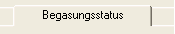
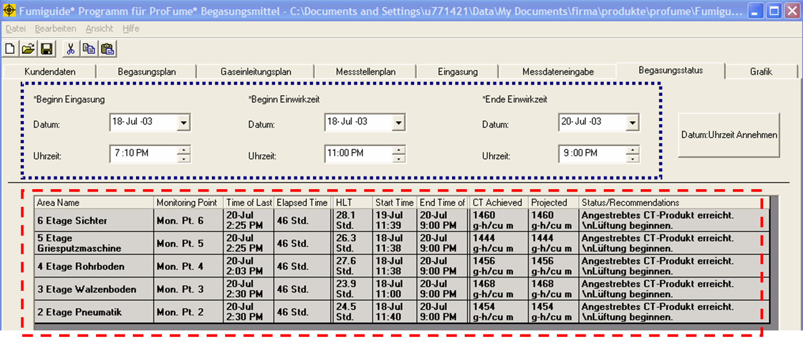
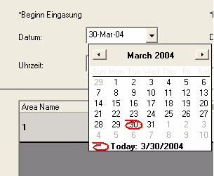
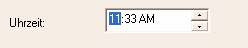
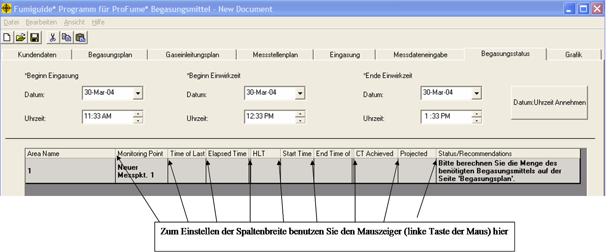
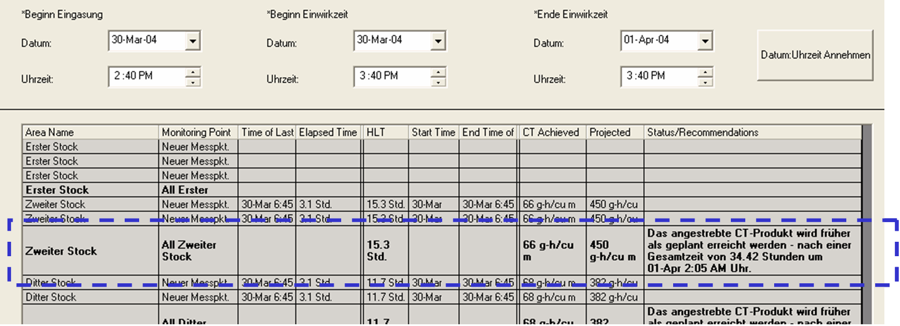
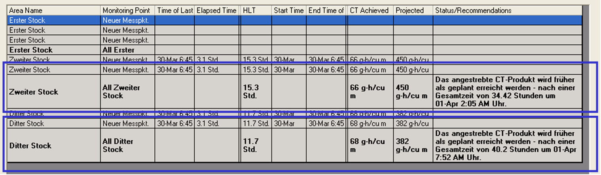
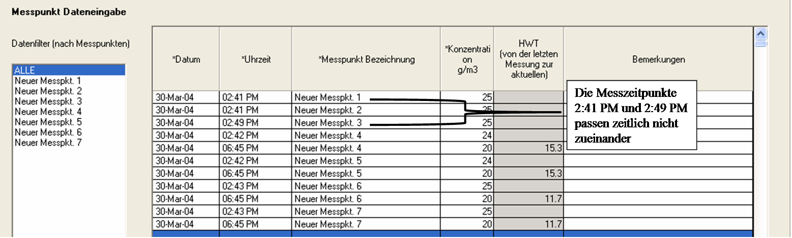
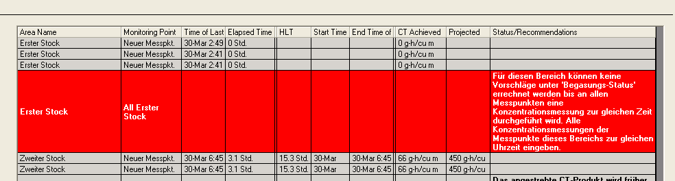

Begasungsstatus-Fenster
Nachdem ausreichende Messdaten im Messdateneingabe-Fenster eingegeben wurden, kann der Bediener sich im Begasungsstatus-Fenster den aktuellen Stand des Begasungsvorgangs sowie Empfehlungen anzeigen lassen.

Das Begasungsstatus-Fenster
besteht aus zwei Abschnitten: Die Eingabefelder für den Bediener (Beginn
Eingasung, Beginn Einwirkzeit und Ende Einwirkzeit) und die Status-Tabelle. Die
Felder Beginn Eingasung, Beginn Einwirkzeit und Ende Einwirkzeit können vom
Bediener geändert werden. Alle in der Status-Tabelle enthaltenen Informationen
werden vom ProFume Fumiguide-Programm auf der Grundlage der Messdaten und der
Zeitpunkte für Beginn Einwirkzeit und Ende Einwirkzeit berechnet.
Begasungsstatus/Empfehlungen für das Erreichen der Zieldosierung basieren auf
dem Begasungsplan und den im Messdateneingabe-Fenster eingegebenen
Messdaten.

Die einzelnen Felder für
Bedienereingaben werden nachstehend erläutert:
Beginn Eingasung
ist der Zeitpunkt, an dem das Begasungsmittel in ein Gebäude bzw. einen Raum
eingeleitet wurde. Dieser Wert muss zeitlich vor dem Beginn der Einwirkzeit
liegen.
Beginn Einwirkzeit ist der Zeitpunkt, an dem die
Akkumulation des CT-Produkts (Dosierung) beginnt. Dieser Wert muss zeitlich nach
dem Beginn der Eingasung und vor dem Ende der Einwirkzeit liegen. Die
Konzentrationsmessungen vor Beginn der Einwirkzeit werden in der CT-Akkumulation
nicht berücksichtigt.
Ende Einwirkzeit ist der Zeitpunkt, an dem
die Akkumulation des CT-Produkts (Dosierung) endet. Dieser Zeitpunkt muss zeitlich nach dem Beginn der Einwirkzeit liegen. Die Konzentrationsmessungen nach dem Ende der Einwirkzeit werden in der CT-Akkumulation nicht berücksichtigt.
Beginn Eingasung, Beginn Einwirkzeit und Ende Einwirkzeit eingeben
Das Datenformat ist TT:MMM:JJ (z. B. 04-MRZ-03). Das Format
für die Uhrzeit ist hh:mm (z. B. 10:15).
Datum und Uhrzeit
für Beginn Eingasung, Beginn Einwirkzeit und Ende Einwirkzeit müssen eingangs im
Fenster Messdateneingabe eingegeben werden. Die Eingabe von Messdaten kann erst
nach der Eingabe von Datum und Uhrzeit für Beginn Eingasung, Beginn Einwirkzeit
und Ende Einwirkzeit erfolgen. Die Datums- und Uhrzeitangaben werden daraufhin
automatisch vom Fenster Messdateneingabe in das Fenster Begasungsstatus
kopiert.
Die Messdaten für einen bestimmten Bereich müssen im Fenster Messdateneingabe eingegeben werden, bevor Begasungsstatus/Empfehlungen im Fenster Begasungsstatus erzeugt werden können.
Beginn
Eingasung, Beginn Einwirkzeit und Ende Einwirkzeit ändernDatum und Uhrzeit
für Beginn Eingasung, Beginn Einwirkzeit und Ende Einwirkzeit können jederzeit geändert werden (sofern sie eingangs im Fenster Messdateneingabe eingegeben wurden).
Bei einer Änderung
der Datums- oder Uhrzeitangaben für Beginn Eingasung, Beginn Einwirkzeit oder
Ende Einwirkzeit entweder im Fenster Begasungsstatus oder im Fenster
Messdateneingabe werden die entsprechenden Werte automatisch im jeweils anderen
Fenster angepasst.
Es gibt verschiedene Möglichkeiten, die Datums- und
Uhrzeitangaben zu ändern.
1) Wählen Sie Tag, Monat oder Jahr im
Datumsfeld aus und geben Sie den neuen Wert ein.
2) Öffnen Sie im Datumsfeld
mit dem Pfeil an der rechten Seite die Bildlaufleiste, um einen Kalender
anzuzeigen. Wählen Sie das gewünschte Datum durch Anklicken aus.
3) Klicken
Sie im Uhrzeit-Feld je nach gewünschter Änderung auf Stunden oder Minuten.
Durch Anklicken der Pfeile können Sie die Uhrzeit verändern.


Die Uhrzeiteinstellungen für
Beginn Einwirkzeit und Ende Einwirkzeit bestimmen die Dauer der Einwirkzeit für
die Begasung und legen die Zeitspannen fest, über die die CT-Akkumulation
berechnet wird.
Die Dauer
der Einwirkzeit muss mit den Eingaben in den Fenstern Begasungsstatus und
Begasungsplan übereinstimmen, um präzise Anweisungen unter
Begasungsstatus/Empfehlungen zu gewährleisten.
Hinweis: Die Einwirkzeit sollte im Fenster Begasungsplan
und im Fenster Begasungsstatus stets identisch sein. Wird die Dauer der
Einwirkzeit (Einwirkdauer) im Fenster Begasungsstatus durch Änderung des Werts
für Beginn Einwirkzeit oder Ende Einwirkzeit geändert, so wird die Einwirkzeit
im Fenster Begasungsplan ebenfalls automatisch geändert, damit diese mit der
Einwirkzeit im Fenster Begasungsstatus übereinstimmt. Die Neuberechnung im
Begasungsplan muß nach der Änderung der Einwirkzeit erfolgen.
Spalten
in der Tabelle Begasungsstatus Die Spaltenbreite lässt sich durch Anklicken der Trennlinie zwischen den einzelnen Spalten in der Kopfzeile und Verschieben auf die gewünschte Spaltenbreite verändern.

Bezeichnung Bereich
– Bezeichnung des gesamten Gebäudes oder eines Teils oder Bereichs des
gesamten zu begasenden Gebäudes. Diese Bezeichnung wird im Begasungsplan
eingegeben und kann auch nur dort geändert werden.
Ein Bereich kann mehr
als einen Messpunkt haben. Begasungsstatus/Empfehlungen werden ausschließlich
nach Bereichen, nicht nach einzelnen Messpunkten angezeigt.
Das
Fumiguide-Programm erstellt automatisch eine Zeile "Alle Bereiche", die die
Durchschnittswerte für HWT, Erreichtes CT-Produkt und Vorberechnetes CT-Produkt
für die Messpunkte innerhalb eines Bereichs darstellt. In dieser Zeile wird der
fett gedruckten Bezeichnung für den Bereich (unten
eingekreist) „Alle“ vorangestellt, um anzuzeigen, dass es sich hier um
die Zeile Begasungsstatus/Empfehlungen für diesen Bereich
handelt.
Begasungsstatus/Empfehlungen basieren auf den durchschnittlichen
Messpunkt-Konzentrationen für den betreffenden Bereich. Bei mehr als einem
Messpunkt für einen Bereich wird die Bezeichnung des Bereichs nicht in jeder
Messpunktzeile fett gedruckt.
Messpunkt – Bezeichnungen
für die Messpunkte, im Messstellenplan festgelegt. Die einzelnen Bereiche eines
zu begasenden Raumes können jeweils mehr als einen Messpunkt haben. In der Zeile
für Messpunkt-Durchschnittswerte werden die Durchschnittswerte für HWT,
Erreichtes CT-Produkt und Vorberechnetes CT-Produkt sowie
Begasungsstatus/Empfehlungen für die Messpunkte innerhalb eines Bereichs
ermittelt. Als Bezeichnung für den Messpunkt wird „Alle“, gefolgt von der
Bezeichnung des Bereichs, angegeben.

Weitere Begriffe und Definitionen in diesem
Fenster:
Zeitpunkt der Letzten Eintragung – Datum und Uhrzeit der
letzten Eintragung (Konzentrationen) für einen bestimmten
Messpunkt.
Verstrichene Zeit – Anzahl der verstrichenen Stunden
zwischen Beginn Einwirkzeit und Zeitpunkt der Letzten Eintragung (der
Begasungsmittelkonzentration).
HWT – berechnete Halbwertzeit von
der letzten Begasungsmittel-Höchstkonzentration bis zum Zeitpunkt der letzten
Eintragung. In der Zeile "Alle Bereiche" wird als HWT die durchschnittliche HWT
der einzelnen Messpunkte innerhalb des betreffenden Bereichs
angezeigt.
Beginn HWT – Der jüngste Zeitpunkt, an dem ein
Konzentrationshöchststand für einen Messpunkt gemessen wurde.
Ende
HWT – Zeitpunkt der letzten Konzentrationsmessung
Erreichtes
CT-Produkt – Produkt aus Konzentration x Zeit (Concentration x Time), das
vom Beginn der Einwirkzeit bis zum Zeitpunkt der letzten Eintragung erreicht
wurde. Die Einwirkung von ProFume auf die Schädlinge nach Ende der Einwirkzeit
wird bei der Berechnung des Erreichten CT-Produkts nichts berücksichtigt. In der
Zeile „Alle Bereiche“ wird als Erreichtes CT-Produkt der Durchschnittswert der
Erreichten CT-Produkte der einzelnen Messpunkte innerhalb des betreffenden
Bereichs angezeigt.
Vorberechnetes CT-Produkt – Das CT-Produkt,
das voraussichtlich innerhalb der geplanten Einwirkzeit akkumuliert wird,
basierend auf den tatsächlichen HWT- und Konzentrationsmessungen. Dabei wird
angenommen, dass die HWT von der letzten Eintragung bis zum Ende der Einwirkzeit
unverändert bleibt. Das Vorberechnete CT-Produkt und die geschätzte Uhrzeit der
Beendigung können nur berechnet werden, wenn eine HWT berechnet wurde. In der
Zeile “Alle Bereiche” wird als Vorberechnetes CT-Produkt das durchschnittliche
Vorberechnete CT-Produkt für die einzelnen Messpunkte innerhalb des betreffenden
Bereichs angezeigt.
Begasungsstatus/Empfehlungen – Kurze Meldung
zum Fortschritt der Begasung zum Zeitpunkt der letzen Eintragung im Hinblick auf
das Erreichen der angestrebten Zieldosierung. Außerdem werden Empfehlungen für
das Erreichen der angestrebten Zieldosierung gegeben. Die Meldungen ändern sich
laufend im Zuge der Eingabe neuer Messdaten.
Nachstehend sehen Sie ein
Beispiel für das Fenster Begasungsstatus nach etwa der Hälfte des
Begasungsvorgangs. Beachten Sie, dass HWT, Erreichtes CT-Produkt, Vorberechnetes
CT-Produkt und Begasungsstatus/Empfehlungen in Fettdruck dargestellt
werden (unten eingekreist).

Begasungsstatus / Empfehlungen
Das
Feld Begasungsstatus/Empfehlungen hält Sie über den Fortschritt der Begasung auf
dem Laufenden. Das Feld Begasungsstatus/Empfehlungen kann darüber hinaus
Anweisungen für Korrekturmaßnahmen enthalten, etwa die Einleitung von
zusätzlichem Begasungsmittel oder die Verlängerung der
Einwirkzeit.
Begasungsstatus/Empfehlungen können erst angezeigt werden,
nachdem für den betreffenden Bereich im Messdateneingabe-Fenster Messdaten
eingegeben wurden. Begasungsstatus/Empfehlungen basieren auf der Zieldosierung
und auf dem Fortschritt der Begasung im Hinblick auf das Erreichen des
Angestrebten CT-Produkts. Begasungsstatus/Empfehlungen sind jeweils
bereichsabhängig.
Begasungsstatus/Empfehlungen basieren jeweils auf den
zuletzt erfassten Messdaten. Daher kann sich die Anzeige
Begasungsstatus/Empfehlungen nach der Eingabe neuer Messdaten in das
Messdateneingabe-Fenster unter Umständen ändern.
Gibt es für einen
bestimmten Bereich nur einen einzigen Messpunkt, so werden die Informationen
Begasungsstatus/Empfehlungen in der Zeile für den betreffenden Messpunkt
angezeigt. Die Bezeichnung des Messpunkts ist fett gedruckt.
Gibt es in
einem Bereich mehr als einen Messpunkt, so richtet das Fumiguide-Programm
automatisch eine Zeile "Alle Bereiche" ein. Diese Zeile wird mit der fett
gedruckten Bezeichnung "Alle [Bezeichnung Bereich]" in der Spalte Messpunkte
gekennzeichnet. (Im Messstellenplan-Fenster können Sie das von Ihnen erstellte
Bereichs-/ Messpunkte-Layout einsehen). Die Angaben unter
Begasungsstatus/Empfehlungen basieren auf den Durchschnittswerten der
Messpunktkonzentrationen für den betreffenden Bereich.
Wenn Sie bei
Beginn der Einwirkzeit oder Ende der Einwirkzeit keinen
ProFume-Konzentrationsmesswert eingeben, so berechnet das Programm automatisch
die interpolierte Konzentrationsmessung. Dieser interpolierte Wert wird
allerdings nicht angezeigt.
Um die vollständigen Informationen zu
Begasungsstatus/Empfehlungen für einen Bereich zu sehen, gehen Sie mit Hilfe der
Bildlaufleiste am unteren Rand zur rechten Seite des
Begasungsstatus-Felds.
Begasungsstatus/Empfehlungen - Meldungen
Wenn alle Konzentrationsmessungen zeitlich vor dem
Beginn der Einwirkzeit liegen, wird unter Begasungsstatus/Empfehlung folgende
Meldung angezeigt:
“Einleitung des Begasungsmittels hat begonnen. Einwirkzeit
hat noch nicht begonnen.“
Wenn die Begasungsmittelkonzentration steigt, wird
unter Begasungsstatus/Empfehlung folgende Meldung angezeigt:
“Einwirkzeit
läuft. Vorberechnetes CT-Produkt wird erneut berechnet, wenn die Konzentration
nicht mehr steigt."
Bei mehr als einem Messpunkt innerhalb eines Bereichs
müssen die Datums-/ Uhrzeitangaben der einzelnen Messpunkte übereinstimmen, um die Berechnung von Begasungsstatus/Empfehlung zu ermöglichen. Im nachstehenden Beispiel sehen Sie zwei Messpunkte für einen Bereich, bei denen Datum und Uhrzeit nicht übereinstimmen.

Nachstehend sehen Sie ein Beispiel
für eine Meldung unter Begasungsstatus/ Empfehlungen, die erzeugt wird, wenn
Uhrzeit und Datum der einzelnen Messpunkte innerhalb eines Bereichs nicht
übereinstimmen:

“Für diesen Bereich können keine Vorschläge unter 'Begasungs-Status' errechnet werden, bis an allen Messpunkten zur gleichen Zeit eine Konzentrationsmessung durchgeführt wird. Alle Konzentrationsmessungen der Messpunkte dieses Bereichs zur gleichen Uhrzeit eingeben.“
Wird die angestrebte Zieldosierung innerhalb der geplanten Einwirkzeit
voraussichtlich erreicht (+/- 2% der Einwirkzeit), so wird unter
Begasungsstatus/ Empfehlungen folgende Meldung angezeigt:
“Die Begasung verläuft planmäßig, um das angestrebte CT-Produkt
innerhalb der geplanten Einwirkzeit zu erreichen.“
· Wird die angestrebte Zieldosierung voraussichtlich vor Ende der
geplanten Einwirkzeit erreicht, so wird unter Begasungsstatus/Empfehlungen
folgende Meldung angezeigt:
"Das angestrebte CT-Produkt wird
früher als geplant erreicht werden - nach einer Gesamtzeit von (Anzahl der
benötigten Stunden) Stunden am (Datum und Uhrzeit).“
· Wird die angestrebte Zieldosierung voraussichtlich
nicht planmäßig erreicht, d. h. es werden mehr Zeit, mehr Begasungsmittel oder
beides benötigt, um die angestrebte Zieldosierung zu erreichen, so lautet der
erste Satz unter Begasungsstatus/Empfehlungen wie folgt:
"Das Angestrebte CT-Produkt wird nicht wie geplant erreicht
werden."
· Wenn eine Verlängerung der Einwirkzeit zum
Erreichen des angestrebten CT-Produkts führt, und die Erhöhung der
Begasungsmittelmenge bei unveränderter Einwirkzeit nicht die maximal zulässige
Konzentration von 128 g/m³ (oz/MCF) überschreiten würde, so wird unter
Begasungsstatus/Empfehlungen folgende Meldung angezeigt:
“Um
das angestrebte CT-Produkt zu erreichen, Begasungsmittelmenge erhöhen oder
Einwirkzeit verlängern. Zusätzlich {Menge Begasungsmittel} ProFume einleiten, um
eine neue Zielkonzentration von {neue Zielkonzentration } zu erreichen, oder
Einwirkzeit auf insgesamt {Stunden} Stunden verlängern bis {Datum und
Uhrzeit}.“
· Wenn die angestrebte Zieldosierung durch
Verlängerung der Einwirkzeit ohne Erhöhung der Begasungsmittelmenge erreicht
werden kann und die Erhöhung der Begasungsmittelsmenge bei unveränderter
Einwirkzeit die maximal zulässige Konzentration von 128 oz/MCF (g/m³)
überschreiten würde, wird unter Begasungsstatus/ Empfehlungen folgende Meldung
angezeigt:
"Um das angestrebte CT-Produkt zu erreichen,
müssen Sie die Einwirkzeit verlängern. Option 1: Verlängerung der Einwirkzeit
auf eine Gesamtdauer von [benötigte Anzahl Stunden] Stunden bis [Datum und
Uhrzeit]. Option 2: Wenn eine Verlängerung der Einwirkzeit unmöglich ist,
zusätzlich [Menge ProFume] ProFume einleiten, um die maximal zulässige
Zielkonzentration von 128 g/m³ zu erreichen, welche möglicherweise das
angestrebte CT-Produkt nicht erzielen wird.“
· Wenn die Verlängerung der Einwirkzeit ohne
Erhöhung der Begasungsmittelmenge nicht zum Erreichen des angestrebten
CT-Produkts führt und die Erhöhung der Begasungsmittelmenge bei
unveränderter Einwirkzeit die maximal zulässige Konzentration von 128 g/m³
nicht überschreiten würde, wird unter Begasungsstatus/ Empfehlungen
folgende Meldung angezeigt:
"Die ProFume-Konzentration ist
zu niedrig, um das angestrebte CT-Produkt einfach durch eine Verlängerung der
Einwirkzeit zu erreichen. Option 1: Um das angestrebte CT-Produkt innerhalb der
geplanten Einwirkzeit zu erreichen, zusätzlich [Menge ProFume] ProFume
einleiten, um die neue Zielkonzentration von [neue Zielkonzentration] zu
erreichen. Option 2: Verlängerung der Einwirkzeit und anschließend erneute
Prüfung der Eingasungs-Empfehlungen in Begasungsstatus/Empfehlungen.“
· Wenn durch die Verlängerung der Einwirkzeit ohne
Erhöhung der Begasungsmittelmenge das angestrebte CT-Produkt nicht erreicht
wird und eine Erhöhung der Begasungsmittelmenge bei unveränderter
Einwirkzeit die maximal zulässige Konzentration von 128 g/m³ (oz/MCF)
überschreiten würde, so lautet die Begasungsstatus/ Empfehlung wie folgt:
„Bei der derzeit eingegebenen Einwirkzeit wird durch die
Erhöhung der ProFume-Menge um das angestrebte CT-Produkt zu erreichen die
maximal zulässige Zielkonzentration von 128 [g/m³; oz/MCF] überschritten. Option
1: Verlängerung der Einwirkzeit und anschließend erneute Prüfung der Vorschläge
unter Begasungsstatus/Empfehlungen. Option 2: Wenn eine Verlängerung der
Einwirkzeit nicht möglich ist, Erhöhung um [Menge ProFume] ProFume um die
maximal zulässige Zielkonzentration von [neue Zielkonzentration] zu erreichen,
welche möglicherweise das angestrebte CT-Produkt nicht erzielen wird.“
· Bei weniger als 1 Stunde verbleibender Einwirkzeit
können keine Eingasungs-Empfehlungen mehr berechnet werden, da das
Fumiguide-Programm davon ausgeht, dass es eine Stunde dauert, um das
Begasungsmittel einzuleiten.
“Es muss mindestens noch eine
Stunde Einwirkzeit verbleiben, damit das Programm Vorschläge zur zusätzlichen
Gaseinleitung errechnen kann. Um das angestrebte CT-Produkt durch eine
zusätzliche Einleitung von ProFume zu erreichen, unbedingt die Einwirkzeit
verlängern.“
· Wenn das angestrebte CT-Produkt erreicht wurde,
wird unter Begasungsstatus/Empfehlung folgende Meldung angezeigt:
"Angestrebtes CT-Produkt erreicht. Lüftung beginnen."
· Wenn nach Ende der Einwirkzeit Messdaten
eingegeben werden, wird unter Begasungsstatus/Empfehlung folgende Meldung
angezeigt:
"Messdaten nach Ende der Einwirkzeit werden nicht
in die Berechnung des CT-Produkts einbezogen.”